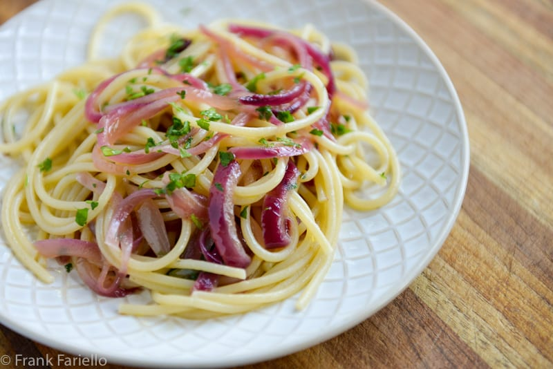

Spaghetti with Onion

Description:
Onion Spaghetti is a great filling vegetarian dish that comes with a BANG!
You would never guess that it's vegetarian!
Ingredients:
- 2 tablespoons of olive oil
- 4 large onions, sliced
- 2 garlic cloves, crushed
- 1 tablespoon tomato paste
- 1 can of whole peeled tomatoes
- 1 teaspoon salt
- 1/4 cup of water
- 1 pound spaghetti
Steps:
- Heat oil in a large skillet over medium heat. Cook onions and garlic in oil until soft.
Stir in tomato paste, tomatoes, salt, pepper, basil and water. Cover, reduce heat to low,
and simmer 20 minutes, until thickened.
- While sauce is simmering, bring a large pot of lightly salted water to a boil. Add pasta and
cook for 8 to 10 minutes or until al dente; drain.
- Toss sauce with hot pasta.